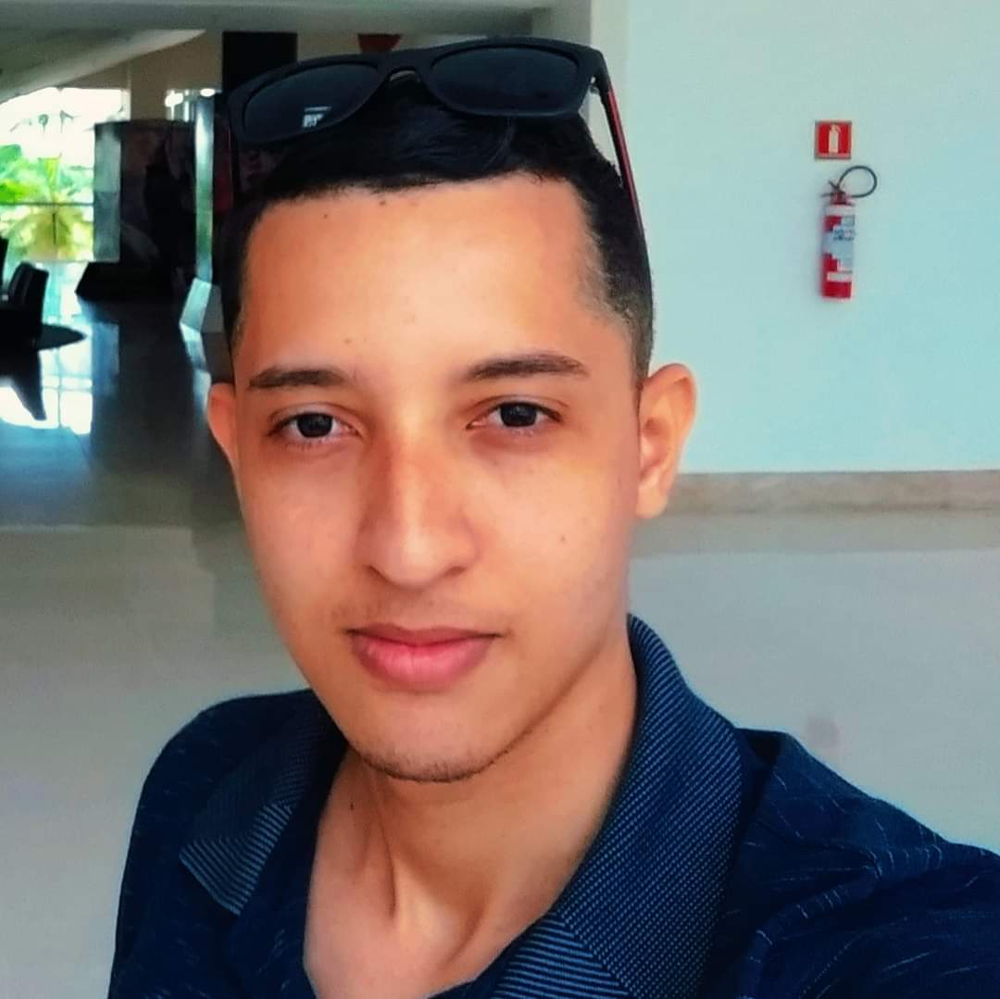

Sobre mim
Desenvolvedor PHP · Laravel · Symfony · área metropolitana de Lisboa, Portugal.
Apresentação

Olá, sou o Cryswerton Silva. Sou desenvolvedor PHP com cerca de 2 anos e 10 meses de experiência em software. Trabalho com Laravel, Symfony, Git, Vue.js, jQuery, HTML, CSS e Docker.
Atualmente sou Software Developer (Axians PEPAC) na knowmad mood, em Lisboa, desde março de 2025. Antes fui Web Developer na Imagine O'Clock (junho de 2022 a março de 2025), também em Lisboa. Curso graduação na UNINTER (Centro Universitário Internacional), em Curitiba — previsão 2025 a 2029.
Compartilho conteúdo no YouTube sobre desenvolvimento e tecnologias que uso no dia a dia; no Portfólio estão mais links, incluindo o GitHub.
Presença online
Hobbies e interesses
- Produção de vídeo e canal no YouTube
- Comunidade PHP e boas práticas (Laravel, Symfony, PHP 8+)
- Open source e experimentos no GitHub
- Café e música enquanto codifico